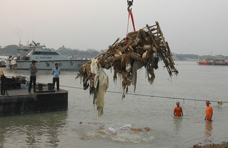

Idol immersions after Durga Puja leave rivers polluted yet again

Impact on water quality
A 1993-95, a study by the Central Pollution Control Board (CPCB)—Impacts of Dussehra Festival on the River Hooghly: A case study—showed that every year at least 15,000 idols of Goddess Durga are immersed in the Hooghly river alone. The study states that this releases 16.8 tonnes of varnish and garjan oil and 32 tonnes of colours in the water. These colours contain a good doze of heavy metals like manganese, lead, mercury and chromium. The study also found that during Dusshera, oil and grease in the river increased by 0.99 milligram per litre (mg/l) and the concentration of heavy metals increased by 0.104 mg/l.
Just ahead of the festive season this year, the Allahabad High Court had banned immersion of idols in the Ganga and Yamuna rivers in Uttar Pradesh. The high court bench of Justice Ashok Bhushan and Justice Arun Tandon ordered a blanket ban on immersion of idols in the rivers. It also dismissed the plea of the state government that the idols would be immersed and then taken out immediately. The order was pronounced during the hearing of a petition of environmental activist, Sudhanshu Srivastava, to check the rising pollution levels in the Ganga.
Though the state administration officials pleaded for a year's time, the bench declined their plea and ordered the state government to ensure that within a year there should be “zero immersion” in the rivers of Uttar Pradesh. The court had earlier asked the Uttar Pradesh SPCB to monitor the water quality before and after the immersion of idols. The report submitted before the court revealed that the water quality deteriorated drastically after immersion of idols.
States that have acted
Last year, the Gujarat government imposed a blanket ban on the use of PoP and other hazardous materials in idols and their immersion in any main water body. The state forest and environment department directed all the district collectors and municipal corporations to strictly prevent immersion of idols in natural water bodies by making artificial ponds near lakes and rivers for immersion of Tazia and idols during Ganesh Chaturthi, Dussehra and other festivals. The local administrations have been asked to barricade the “idol immersion points” and put synthetic liners in the artificial ponds ahead of immersion processions. These liners would be removed after the immersion ceremonies along with the idol remains, and disposed as per the solid waste management rules.
The Karnataka SPCB has introduced mobile immersion units for the immersion of Ganesh idols to prevent pollution of water bodies. KSPCB’s move is aimed at providing “immersion points” to people near their residence. It has also appealed to the residents to make use of eco-friendly idols for the festivities.
After Ganesh Chaturthi this year, over 130,000 Ganesh idols were immersed in artificial tanks at different locations in Nagpur and over 220 tonnes of puja samagri was collected. Last year, this figure was 90,000.
The Indore Municipal Corporation has also been installing artificial tank and trench for the immersion. People are required to strip the idols of plastic and other non-biodegradable materials used to make garlands and clothes before the immersion.
The Calcutta High Court in October 2010 had directed that the guidelines framed by the West Bengal SPCB will have to be followed for cleaning up the river Ganga after immersion of idols. The court also emphasised that it is the duty of the Kolkata Port Trust (KPT) and municipalities to clean the river and sea front after idol immersion.